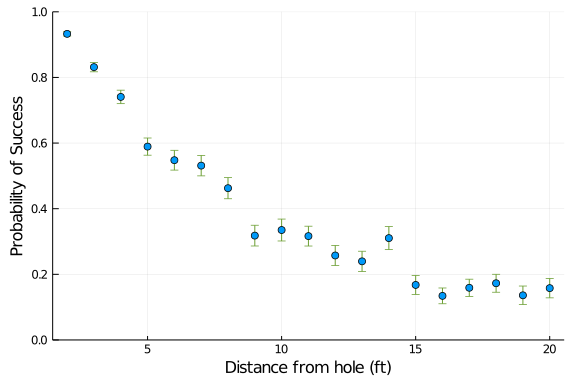
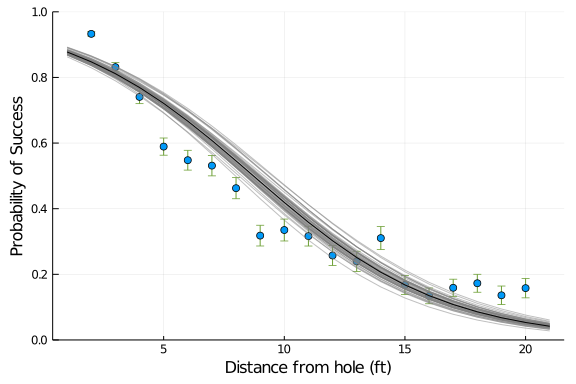
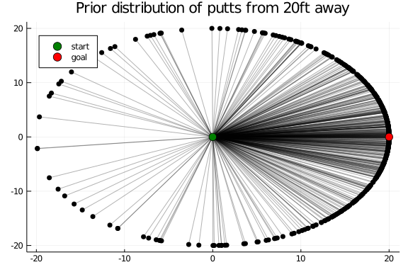
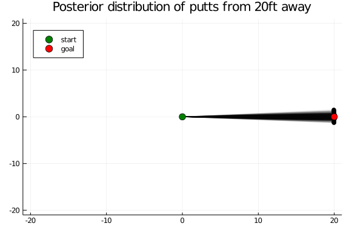
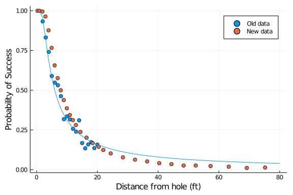
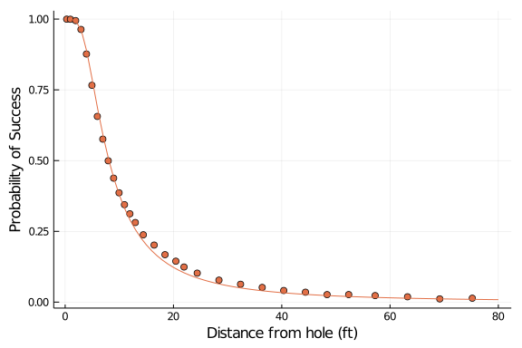
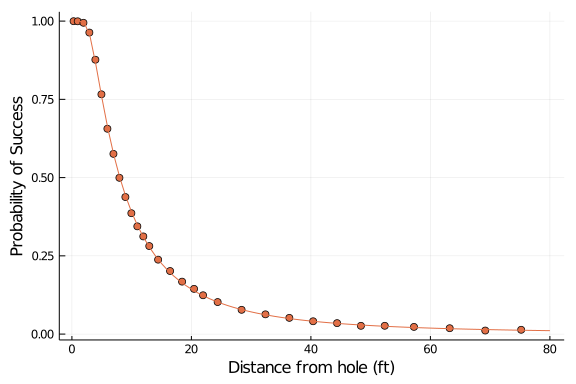

Updates (May 2020):
I originally wrote this Turing.jl version of the golf putting model in late 2019. Since then there have been many updates to the Turing.jl Julia package. I’ve updated this blog post to be aligned with the latest release (v0.13.0) and have also included something new given that the latest release includes a feature for sampling from the prior distribution.
First Thing (Disclaimer)
This blog post is based on a blog post written by the popular bayesian statistician Andrew Gelman.
Dr. Gelman’s post was written in the Stan probabilistic programming language (or PPL). Since this post, there have been a couple other blog posts translating the code to other PPLs. They are excellent and I definitely recommend checking them out. Here’s the list of links and my opinion on some of the benefits of reading each:
- Dr. Gelman’s using Stan with R: See here. Read Dr. Gelman’s post first as he lays out the problem being modeled here really well. Explaining the geometry at play and how to adjust the models to incorporate the physics of the problem. It’s a great article showing the power of using a probabilistic programming language to build models.
- Colin Carroll’s using the Python PPL PyMC3: You can check out his work here. I really enjoyed Colin’s post because of his prior and posterior predictive checks, data visualizations, and showing the value of these models moving past predictions.
- Adam Haber’s post using Python and Tensorflow Probability: See here. His post goes into great detail about more of the sampling and lower level details of Tensorflow Probability and MCMC.
My post is nothing really novel, simply a port to the Julia PPL, Turing.jl. This post shows how to specify and estimate these same models within the Julia programming language.
Getting started and plotting
Let’s Load the data and take a look:
using Turing, HTTP, CSV
# Hide sampling progress.
Turing.turnprogress(false);
resp = HTTP.get("https://raw.githubusercontent.com/stan-dev/example-models/master/knitr/golf/golf_data.txt");
data = CSV.read(IOBuffer(resp.body), normalizenames = true, header = 3)
x, n, y = (data[:,1], data[:,2], data[:,3])We have three variables in this dataset:
| Variable | Units | Description |
|---|---|---|
| x | feet | The distance of the attempted putt |
| n | count | The total attempts (or trials) of putts at a chosen distance |
| y | count | The total successful putts from the total attempts |
What we are attempting to build is a model to predict the probability of success given the distance from the hole. We need to transform this data a bit to explore the dataset visually. Let’s calculate the probabilities and the error involved. We’ll use the following formula to calculate the error bars for the putting success rate:
\[ \sqrt{\hat{p}_j(1-\hat{p}_j)/n_j} \]
Now let’s visualize the dataset:
using Plots
# plot out the error
scatter(
x, pj,
yerror= error,
legend = false,
ylim = (0, 1),
ylab = "Probability of Success",
xlab = "Distance from hole (ft)")
Logistic Regression
Building our first model, a GLM (Generalized Linear Model). We will attempt to model the probability of success in golf putting incorporating the distance as an independent (or predictor) variable.
\[ y_j\sim\mbox{binomial}(n_j, \mbox{logit}^{-1}(a + bx_j)), \mbox{ for } j=1,\dots, J. \]
using StatsFuns: logistic
@model golf_logistic(x,y,n,J) = begin
# parameters
a ~ Normal(0, 1)
b ~ Normal(0, 1)
# model
for i in 1:J
p = logistic(a + b * x[i])
y[i] ~ Binomial(n[i], p)
end
end
chn = sample(golf_logistic(x, y, n, length(x)), NUTS(), MCMCThreads(), 4000, 4);The sample method now allows for parallel sampling with either one thread per chain (MCMCThreads) or one process per chain (MCMCDistributed). Here I’m using multithreading and am specifying 4 chains should be used.
Now that we’ve sampled the joint probability distribution. Let’s take a look at the results. I’ll create a function to show the table of results as html using the PrettyTables.jl package. Looking at the summary statistics for the posterior distribution:
using PrettyTables, DataFrames
formatters = (v,i,j) -> (j > 1) ? round(v, digits=3) : v
function prettystats(chains)
chains |>
x -> summarystats(x) |>
x -> DataFrame(x) |>
x -> pretty_table(x, backend = :html, formatters = formatters)
end
prettystats(chn)| parameters | mean | std | naive_se | mcse | ess | r_hat |
|---|---|---|---|---|---|---|
| a | 2.225 | 0.057 | 0.001 | 0.001 | 2997.531 | 1.002 |
| b | -0.255 | 0.007 | 0.0 | 0.0 | 3137.058 | 1.002 |
Visualizing the predictions:
a_post = median(chn[:a].value)
b_post = median(chn[:b].value)
# iterator for distance from hole calcs
xrng = 1:1:21
post_lines = [logistic(a_post + b_post * x) for x = xrng]
# 50 draws from the posterior
using StatsBase
a_samp = StatsBase.sample(chn[:a].value, 50)
b_samp = StatsBase.sample(chn[:b].value, 50)
post_samp = [logistic(a_samp[i] + b_samp[i] * x) for x = xrng, i = 1:50]
plot!(post_samp, alpha = 0.5, color = :gray) # add uncertainty samples
plot!(post_lines, color = :black) # add median
First Principles
The next step is building a more bespoke model that incorporates the physics of this problem. Dr. Gelman describes this step as follows:
We assume that the golfer is attempting to hit the ball completely straight but that many small factors interfere with this goal, so that the actual angle follows a normal distribution centered at 0 with some standard deviation σ.
The probability the ball goes in the hole is then the probability that the angle is less than the threshold; that is \[ \mbox{Pr}\left(|\mbox{angle}| < \sin^{-1}((R-r)/x)\right) = 2\Phi\left(\frac{\sin^{-1}((R-r)/x)}{\sigma}\right) - 1 \]
where Φ is the cumulative normal distribution function.
Again, for more background I would suggest reading the original post. So now we’ll define the function Phi. It’s the cumulative distribution function of the standard normal distribution.
Now let’s create and sample this model incorporating the angle.
@model golf_angle(x, y, n, J, r, R) = begin
# transformed data
threshold_angle = asin.((R - r) ./ x)
# parameters
sigma ~ truncated(Normal(0, 1), 0, Inf)
# model
p = 2 * Phi(threshold_angle / sigma) .- 1
for i in 1:J
y[i] ~ Binomial(n[i], p[i])
end
end
# radius of ball and hole respectively
r = (1.68 / 2) / 12
R = (4.25 / 2) / 12Taking a note from Colin’s book, we can perform prior predictive checks for the geometry-based model. In Turing we’ll simply replace the sampler argument on the sample method with Prior().
prior = sample(golf_angle(x, y, n, length(x), r, R), Prior(), 4000)
angle_prior = StatsBase.sample(prior[:sigma].value, 500)
angle_of_shot = rand.(Normal.(0, angle_prior), 1) # radians
angle_of_shot = getindex.(angle_of_shot) # extract array
distance = 20 # feet
end_positions = [
distance * cos.(angle_of_shot),
distance * sin.(angle_of_shot)
]
# visualize
plot(
[[0, i] for i in end_positions[1]],
[[0, i] for i in end_positions[2]],
labels = false,
legend = :topleft,
color = :black,
alpha = 0.3,
title = "Prior distribution of putts from 20ft away"
)
scatter!(end_positions[1], end_positions[2], color = :black, labels = false)
scatter!((0,0), color = :green, label = "start", markersize = 6)
scatter!((20, 0), color = :red, label = "goal", markersize = 6)
Now for the estimation of the parameters:
chn2 = sample(golf_angle(x, y, n, length(x), r, R), NUTS(), MCMCThreads(), 4000, 4)
chn2 = hcat(chn2, Chains(chn2[:sigma].value * 180 / π, ["sigma_degrees"]))
prettystats(chn2)| parameters | mean | std | naive_se | mcse | ess | r_hat |
|---|---|---|---|---|---|---|
| sigma | 0.027 | 0.0 | 0.0 | 0.0 | 5818.38 | 1.0 |
| sigma_degrees | 1.527 | 0.023 | 0.0 | 0.0 | 5818.38 | 1.0 |
Now we can calculate predictions and see how this model compares to the logistic model. Let’s wrap the angle calculation into a function as we’ll use it frequently throughout the post.
Calculate and visualize predictions.
# calculate predictions
post_sigma = median(chn2[:sigma].value)
threshold_angle = [asin((R - r) / x) for x = xrng]
geom_lines = prob_angle(threshold_angle, post_sigma)
scatter(
x, pj,
yerror= error,
label = "",
ylim = (0, 1),
ylab = "Probability of Success",
xlab = "Distance from hole (ft)")
plot!(post_lines, color = :black, label = "Logistic regression")
plot!(geom_lines, color = 1, label = "Geometry-based model")
We see that the geometry based model fits the data much better than the Logistic regression.
Now let’s perform a posterior predictive check:
angle_post = StatsBase.sample(chn2[:sigma].value, 500)
angle_of_shot = rand.(Normal.(0, angle_post), 1) # radians
angle_of_shot = getindex.(angle_of_shot) # extract array
distance = 20 # feet
end_positions = [
distance * cos.(angle_of_shot),
distance * sin.(angle_of_shot)
]
# visualize
plot(
[[0, i] for i in end_positions[1]],
[[0, i] for i in end_positions[2]],
xlim = (-21, 21),
ylim = (-21, 21),
labels = false,
legend = :topleft,
color = :black,
alpha = 0.1,
title = "Posterior distribution of putts from 20ft away"
)
scatter!(end_positions[1], end_positions[2], color = :black, labels = false)
scatter!((0,0), color = :green, label = "start", markersize = 6)
scatter!((20, 0), color = :red, label = "goal", markersize = 6)
New Golf Data
Then came new data. Dr. Gelman received new data of golf putting and compared the fit of the original geometry based model with the old and new data. Here is the comparison below:
respnew = HTTP.get("https://raw.githubusercontent.com/stan-dev/example-models/master/knitr/golf/golf_data_new.txt");
datanew = CSV.read(IOBuffer(respnew.body), normalizenames = true, header = 3)
xnew, nnew, ynew = (datanew[:,1], datanew[:,2], datanew[:,3])
pnew = ynew ./ nnew
xrngnew = 1:1:80
# plot the old model fit with new data
threshold_angle2 = [asin((R - r) / x) for x = xrngnew]
geom_lines2 = prob_angle(threshold_angle2, post_sigma)
scatter(
x, pj,
label = "Old data",
ylab = "Probability of Success",
xlab = "Distance from hole (ft)",
color = 1)
scatter!(xnew, pnew, color = 2, label = "New data")
plot!(geom_lines2, label = "", color = 1)
We see that the new data have many more observations with longer distance putts than in the original data. The probability of success for these longer distance putts do not agree with the original geometry based model.
Updated Geometry
So Dr. Gelman improves the model by taking distance into account.
To get the ball in the hole, the angle isn’t the only thing you need to control; you also need to hit the ball just hard enough.
…the probability a shot goes in becomes, \[ \left(2\Phi\left(\frac{\sin^{-1}((R-r)/x)}{\sigma_{\rm angle}}\right) - 1\right)\left(\Phi\left(\frac{2}{(x+1)\,\sigma_{\rm distance}}\right) - \Phi\left(\frac{-1}{(x+1)\,\sigma_{\rm distance}}\right)\right) \]
where we have renamed the parameter σ from our earlier model to σ_angle to distinguish it from the new σ_distance parameter.
Let’s add a function for the distance calculation for the improved geometry.
prob_distance(distance, tol, overshot, sigma) =
Phi((tol - overshot) ./ ((distance .+ overshot) * sigma)) -
Phi(-overshot ./ ((distance .+ overshot) * sigma));Now let’s create the model to sample:
@model golf_angle_dist(x, y, n, J, r, R, overshot, distance_tolerance) = begin
# transformed data
threshold_angle = asin.((R - r) ./ x)
# parameters
sigma_angle ~ truncated(Normal(0, 1), 0, Inf)
sigma_distance ~ truncated(Normal(0, 1), 0, Inf)
# model
p_angle = prob_angle(threshold_angle, sigma_angle)
p_distance = prob_distance(x, distance_tolerance, overshot, sigma_distance)
p = p_angle .* p_distance
for i in 1:J
y[i] ~ Binomial(n[i], p[i])
end
end
overshot = 1.
distance_tolerance = 3.
chn3 = sample(
golf_angle_dist(xnew, ynew, nnew, length(xnew), r, R, overshot, distance_tolerance),
NUTS(),
MCMCThreads(),
6000,
4)
prettystats(chn3)| parameters | mean | std | naive_se | mcse | ess | r_hat |
|---|---|---|---|---|---|---|
| sigma_angle | 0.014 | 0.002 | 0.0 | 0.0 | 80.321 | 1.317 |
| sigma_distance | 0.135 | 0.01 | 0.0 | 0.001 | 80.321 | 1.36 |
Dr. Gelman’s post suggests something is unstable with this model estimation. The estimated parameters match his closely. I did notice that sampling this model did not always give me same results though. I ended up increasing the length of the chains to try to get around the inconsistent parameter estimation I was experiencing.
Now let’s make some predictions and visualize the results:
# calculate predictions
post_siga = median(chn3[:sigma_angle].value)
post_sigd = median(chn3[:sigma_distance].value)
p_angle = prob_angle(threshold_angle2, post_siga)
p_distance = prob_distance(xrngnew, distance_tolerance, overshot, post_sigd)
geom2_lines = p_angle .* p_distance
# plot
scatter(
xnew, pnew,
legend = false,
color = 2,
ylab = "Probability of Success",
xlab = "Distance from hole (ft)")
plot!(geom2_lines, color = 2)
Now this model fits the new data better than the original geometry based model but you can see an issue near the middle of the range of the x-axis (distance). Some of Gelman’s select comments and proposed fix:
There are problems with the fit in the middle of the range of x. We suspect this is a problem with the binomial error model, as it tries harder to fit points where the counts are higher. Look at how closely the fitted curve hugs the data at the very lowest values of x.
To fix this problem we took the data model, \[ y_j \sim \mbox{binomial}(n_j, p_j)\], and added an independent error term to each observation.
…we first approximate the binomial data distribution by a normal and then add independent variance; thus: \[ y_j/n_j \sim \mbox{normal}\left(p_j, \sqrt{p_j(1-p_j)/n_j + \sigma_y^2}\right) \]
A Dispersed Model
Now let’s implement the changes referenced above within Turing:
@model golf_angle_dist_resid(x, y, n, J, r, R, overshot, distance_tolerance, raw) = begin
# transformed data
threshold_angle = asin.((R - r) ./ x)
# parameters
sigma_angle ~ truncated(Normal(0, 1), 0, Inf)
sigma_distance ~ truncated(Normal(0, 1), 0, Inf)
sigma_y ~ truncated(Normal(0, 1), 0, Inf)
# model
p_angle = prob_angle(threshold_angle, sigma_angle)
p_distance = prob_distance(x, distance_tolerance, overshot, sigma_distance)
p = p_angle .* p_distance
for i in 1:J
raw[i] ~ Normal(p[i], sqrt(p[i] * (1-p[i]) / n[i] + sigma_y^2))
end
end
chn4 = sample(
golf_angle_dist_resid(xnew, ynew, nnew, length(xnew), r, R, overshot, distance_tolerance, ynew ./ nnew),
NUTS(),
MCMCThreads(),
4000,
4)
# adding the conversion to degrees
chns = hcat(chn4, Chains(chn4[:sigma_angle].value * 180 / π, ["sigma_degrees"]))
prettystats(chns)| parameters | mean | std | naive_se | mcse | ess | r_hat |
|---|---|---|---|---|---|---|
| sigma_angle | 0.018 | 0.0 | 0.0 | 0.0 | 5026.215 | 1.001 |
| sigma_distance | 0.08 | 0.001 | 0.0 | 0.0 | 4901.694 | 1.0 |
| sigma_y | 0.003 | 0.001 | 0.0 | 0.0 | 6563.99 | 1.0 |
| sigma_degrees | 1.02 | 0.006 | 0.0 | 0.0 | 5026.215 | 1.001 |
Calculate predictions and visualize:
post_siga = median(chn4[:sigma_angle].value)
post_sigd = median(chn4[:sigma_distance].value)
p_angle2 = prob_angle(threshold_angle2, post_siga)
p_distance2 = prob_distance(xrngnew, distance_tolerance, overshot, post_sigd)
geom_lines2 = p_angle2 .* p_distance2
# plot
scatter(
xnew, pnew,
legend = false,
color = 2,
ylab = "Probability of Success",
xlab = "Distance from hole (ft)")
plot!(geom_lines2, color = 2)
We can see that this adjusted first principles based model is fitting the data much better now! To add to that, it also sampled faster and more consistently during my testing. This case study really shows off the power of a bayesian approach. The modeler has the ability to expand a model using domain knowledge and craft a model that makes sense and aligns with the data generating process.
Conclusion
If you made it this far, thanks for checking out this post! I personally appreciate all of the great scientists, applied statisticians, etc. that have created and shared the other posts I referenced as well as the team developing the Turing PPL within Julia. It’s really exciting to see a PPL written entirely in one language. In my opinion, it shows the strengths of the Julia language and is an example of its promise to solve the two-language problem.
References
- Stan: a state-of-the-art platform for statistical modeling and high-performance statistical computation
- Model building and expansion for golf putting - Gelman
- Model building and expansion for golf putting - Carroll
- Bayesian golf puttings, NUTS, and optimizing your sampling function with TensorFlow Probability
- Turing.jl: A library for robust, efficient, general-purpose probabilistic programming
- Announcing composable multi-threaded parallelism in Julia
- ODSC East 2016 | Stefan Karpinski - “Solving the Two Language Problem”